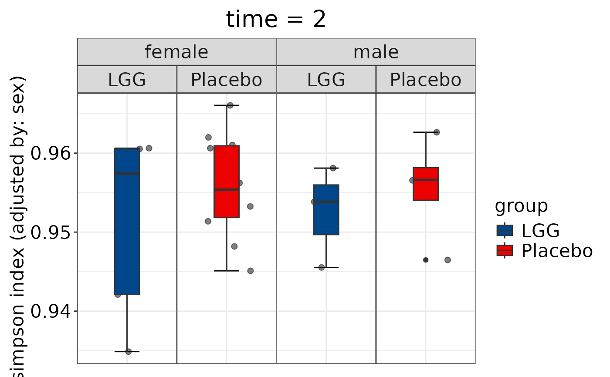

Generate boxplot for alpha diversity index at a single time point
Source:R/generate_alpha_boxplot_single.R
generate_alpha_boxplot_single.RdThis function generates a boxplot of specified alpha diversity indices at a single time point dplyr::across different groupings, with optional stratification. The output can be saved as a PDF.
Usage
generate_alpha_boxplot_single(
data.obj,
alpha.obj = NULL,
alpha.name = c("shannon", "observed_species"),
depth = NULL,
subject.var = NULL,
time.var = NULL,
t.level = NULL,
group.var = NULL,
strata.var = NULL,
adj.vars = NULL,
base.size = 16,
theme.choice = "bw",
custom.theme = NULL,
palette = NULL,
pdf = TRUE,
file.ann = NULL,
pdf.wid = 11,
pdf.hei = 8.5,
...
)Arguments
- data.obj
A list object in a format specific to MicrobiomeStat, which can include components such as feature.tab (matrix), feature.ann (matrix), meta.dat (data.frame), tree, and feature.agg.list (list). The data.obj can be converted from other formats using several functions from the MicrobiomeStat package, including: 'mStat_convert_DGEList_to_data_obj', 'mStat_convert_DESeqDataSet_to_data_obj', 'mStat_convert_phyloseq_to_data_obj', 'mStat_convert_SummarizedExperiment_to_data_obj', 'mStat_import_qiime2_as_data_obj', 'mStat_import_mothur_as_data_obj', 'mStat_import_dada2_as_data_obj', and 'mStat_import_biom_as_data_obj'. Alternatively, users can construct their own data.obj. Note that not all components of data.obj may be required for all functions in the MicrobiomeStat package.
- alpha.obj
An optional list containing pre-calculated alpha diversity indices. If NULL (default), alpha diversity indices will be calculated using mStat_calculate_alpha_diversity function from MicrobiomeStat package.
- alpha.name
The alpha diversity index to be plotted. Supported indices include "shannon", "simpson", "observed_species", "chao1", "ace", and "pielou".
- depth
An integer specifying the sequencing depth for the "Rarefy" and "Rarefy-TSS" methods. If NULL, no rarefaction is performed.
- subject.var
The variable in the metadata table that represents the subject.
- time.var
The variable in the metadata table that represents the time.
- t.level
Character string specifying the time level/value to subset data to, if a time variable is provided. Default NULL does not subset data.
- group.var
An optional variable in the metadata table that represents the grouping factor.
- strata.var
An optional variable in the metadata table that represents the stratification factor.
- adj.vars
A character vector of variable names to be used for adjustment.
- base.size
The base font size for the plot. Default is 16.
- theme.choice
Plot theme choice. Specifies the visual style of the plot. Can be one of the following pre-defined themes: - "prism": Utilizes the ggprism::theme_prism() function from the ggprism package, offering a polished and visually appealing style. - "classic": Applies theme_classic() from ggplot2, providing a clean and traditional look with minimal styling. - "gray": Uses theme_gray() from ggplot2, which offers a simple and modern look with a light gray background. - "bw": Employs theme_bw() from ggplot2, creating a classic black and white plot, ideal for formal publications and situations where color is best minimized. - "light": Implements theme_light() from ggplot2, featuring a light theme with subtle grey lines and axes, suitable for a fresh, modern look. - "dark": Uses theme_dark() from ggplot2, offering a dark background, ideal for presentations or situations where a high-contrast theme is desired. - "minimal": Applies theme_minimal() from ggplot2, providing a minimalist theme with the least amount of background annotations and colors. - "void": Employs theme_void() from ggplot2, creating a blank canvas with no axes, gridlines, or background, ideal for custom, creative plots. Each theme option adjusts various elements like background color, grid lines, and font styles to match the specified aesthetic. Default is "bw", offering a universally compatible black and white theme suitable for a wide range of applications.
- custom.theme
A custom ggplot theme provided as a ggplot2 theme object. This allows users to override the default theme and provide their own theme for plotting. Custom themes are useful for creating publication-ready figures with specific formatting requirements.
To use a custom theme, create a theme object with ggplot2::theme(), including any desired customizations. Common customizations for publication-ready figures might include adjusting text size for readability, altering line sizes for clarity, and repositioning or formatting the legend. For example:
“`r my_theme <- ggplot2::theme( axis.title = ggplot2::element_text(size=14, face="bold"), # Bold axis titles with larger font axis.text = ggplot2::element_text(size=12), # Slightly larger axis text legend.position = "top", # Move legend to the top legend.background = ggplot2::element_rect(fill="lightgray"), # Light gray background for legend panel.background = ggplot2::element_rect(fill="white", colour="black"), # White panel background with black border panel.grid.major = ggplot2::element_line(colour = "grey90"), # Lighter color for major grid lines panel.grid.minor = ggplot2::element_blank(), # Remove minor grid lines plot.title = ggplot2::element_text(size=16, hjust=0.5) # Centered plot title with larger font ) “`
Then pass `my_theme` to `custom.theme`. If `custom.theme` is NULL (the default), the theme is determined by `theme.choice`. This flexibility allows for both easy theme selection for general use and detailed customization for specific presentation or publication needs.
- palette
An optional parameter specifying the color palette to be used for the plot. It can be either a character string specifying the name of a predefined palette or a vector of color codes in a format accepted by ggplot2 (e.g., hexadecimal color codes). Available predefined palettes include 'npg', 'aaas', 'nejm', 'lancet', 'jama', 'jco', and 'ucscgb', inspired by various scientific publications and the `ggsci` package. If `palette` is not provided or an unrecognized palette name is given, a default color palette will be used. Ensure the number of colors in the palette is at least as large as the number of groups being plotted.
A boolean indicating whether to save the output as a PDF file. Default is TRUE.
- file.ann
A string for annotating the output file name.
- pdf.wid
The width of the output PDF file. Default is 11.
- pdf.hei
The height of the output PDF file. Default is 8.5.
- ...
Additional arguments to pass to the plotting function.
Value
A list of boxplots displaying the specified alpha diversity indices at the specified time point dplyr::across different groupings, stratified by the specified stratification variable (if provided). Each boxplot in the list corresponds to one of the alpha diversity indices specified in `alpha.name`. The boxplots will be saved as PDF files if `pdf` is set to `TRUE`.
Examples
if (FALSE) { # \dontrun{
library(vegan)
library(ggh4x)
# Load data
data(peerj32.obj)
# First example with peerj32.obj
generate_alpha_boxplot_single(
data.obj = peerj32.obj,
alpha.obj = NULL,
alpha.name = c("simpson"),
subject.var = "subject",
time.var = "time",
t.level = "2",
group.var = "group",
strata.var = "sex",
adj.vars = "sex",
base.size = 16,
theme.choice = "bw",
palette = NULL,
pdf = TRUE,
file.ann = NULL,
pdf.wid = 11,
pdf.hei = 8.5
)
alpha.obj <- mStat_calculate_alpha_diversity(peerj32.obj$feature.tab, "simpson")
generate_alpha_boxplot_single(
data.obj = peerj32.obj,
alpha.obj = alpha.obj,
alpha.name = c("simpson"),
subject.var = "subject",
time.var = "time",
t.level = "2",
group.var = "group",
strata.var = "sex",
adj.vars = "sex",
base.size = 16,
theme.choice = "bw",
palette = NULL,
pdf = TRUE,
file.ann = NULL,
pdf.wid = 11,
pdf.hei = 8.5
)
# Load another dataset
data("subset_T2D.obj")
# Second example with subset_T2D.obj
generate_alpha_boxplot_single(
data.obj = subset_T2D.obj,
alpha.obj = NULL,
alpha.name = c("shannon"),
subject.var = "subject_id",
time.var = "visit_number",
t.level = " 3",
group.var = "subject_race",
strata.var = "subject_gender",
adj.vars = "sample_body_site",
base.size = 16,
theme.choice = "bw",
palette = NULL,
pdf = TRUE,
file.ann = NULL,
pdf.wid = 20,
pdf.hei = 8.5
)
} # }
library(vegan)
#> Loading required package: permute
#> Loading required package: lattice
library(ggh4x)
#> Loading required package: ggplot2
# Load data
data(peerj32.obj)
# First example with peerj32.obj
generate_alpha_boxplot_single(
data.obj = peerj32.obj,
alpha.obj = NULL,
alpha.name = c("simpson"),
subject.var = "subject",
time.var = "time",
t.level = "2",
group.var = "group",
strata.var = "sex",
adj.vars = "sex",
base.size = 16,
theme.choice = "bw",
palette = "lancet",
pdf = FALSE,
file.ann = NULL,
pdf.wid = 11,
pdf.hei = 8.5
)
#> Data has been subsetted based on the provided condition.
#> Updated metadata to match the subsetted data.
#> The following samples were excluded: sample-1, sample-3, sample-5, sample-7, sample-9, sample-11, sample-13, sample-15, sample-17, sample-19, sample-21, sample-23, sample-25, sample-27, sample-29, sample-31, sample-33, sample-35, sample-37, sample-39, sample-41, sample-43
#> Updated feature table to match the subsetted data.
#> Updated feature annotation to match the subsetted data.
#> Data subsetting complete. Returning updated data object.
#> Warning: It appears the data may not have been rarefied. Please verify.
#> Calculating simpson diversity...
#> Diversity calculations complete.
#> Alpha diversity has been adjusted for the following covariates: sex.
#> $simpson

#>